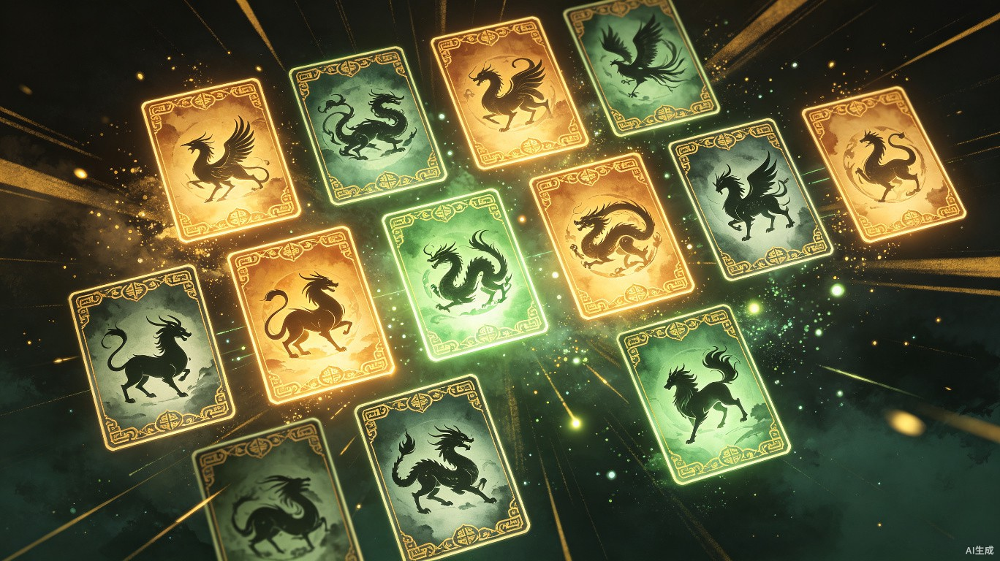
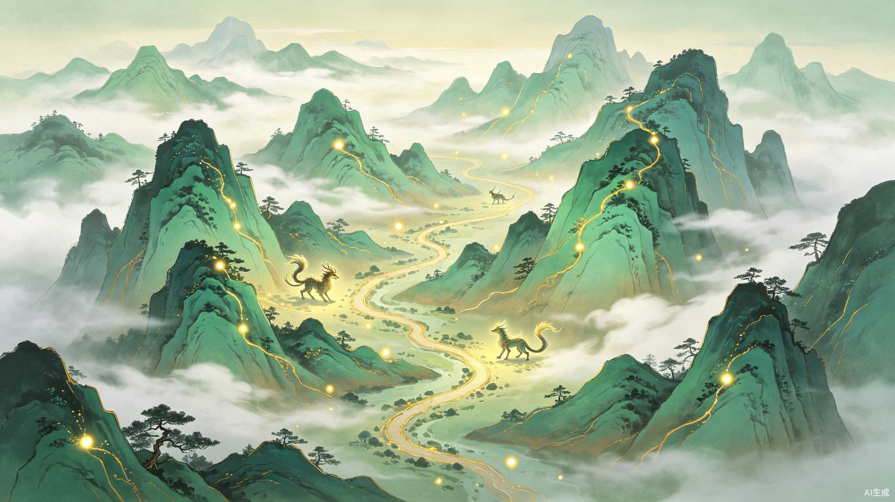
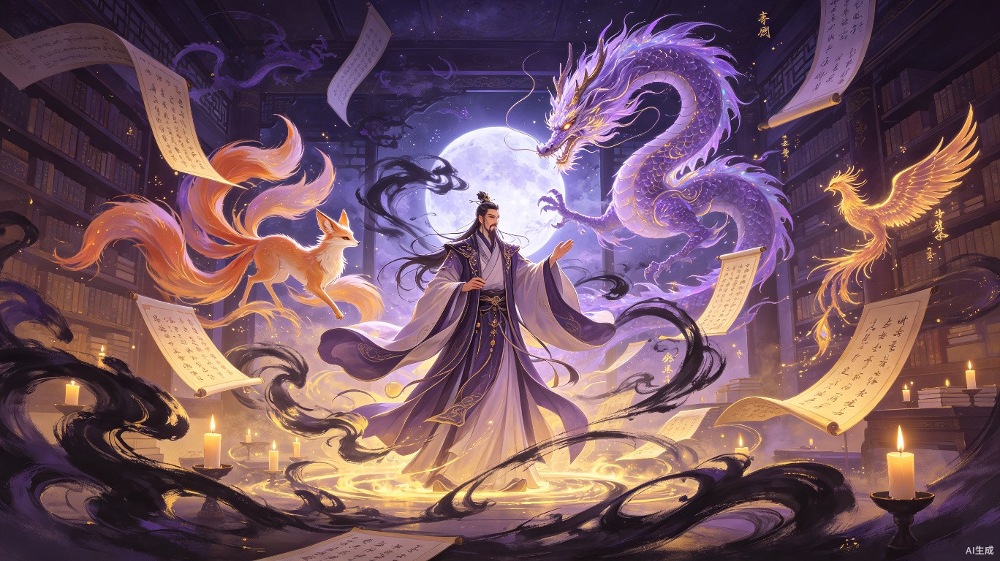

沉浸式科普平台
一款文娱影音与书本无法代替的山海经古籍活化沉浸式科普平台，以原著为基准，建立严谨正确的古籍认知体系
四大核心问题，亟待解决
观众接触山海经多通过动漫影视作品，分不清"艺术改编"和"古籍正史"，市场缺少以原著为基准不改编的学习平台。
市场上山海经作品多是散状碎片化，形象多与其他典籍混合使用，缺少可搭建完整世界观的作品。
传统科普枯燥，影视娱乐过度，没有有趣可学的中间形态产品，无法满足深度学习需求。
动漫影视只用元素，不讲典籍体系，目前山海经只流行IP，不传承文化，原著精神正在流失。
为什么要做这款产品
当动漫影视作品让山海经变得家喻户晓，却也带来了认知的偏差。观众记住了炫酷的神兽形象，却分不清哪些是原著记载，哪些是艺术改编。
我们希望通过数字化的力量，让古籍"活"起来——不是用娱乐替代学习，而是让学习变得有趣；不是碎片化拼凑，而是系统化构建；不是只取IP元素，而是传承文化精神。
"让想了解的人知道哪些是原著，哪些是改编，建立严谨正确的认知，打造娱乐代替不了的山海经学习科普体系。"
我们打造的是什么
文娱影音与书本无法代替的山海经学习新体验
以《山海经》原著为唯一基准，不做任何改编，通过沉浸式交互设计、可视化叙事与数字化探索，让古籍原文以全新形态呈现。让用户在互动中建立对原著的严谨认知，在探索中构建完整的山海经世界观。
四大沉浸式体验，让古籍真正"活"起来
古籍原文与现代白话的灵动对话。用户可与经典文本进行交互，点击查看原文释义、古今对照，在指尖触碰间理解千年前的文字奥秘。
每一段文字都配有精心编写的白话小故事，让零门槛阅读成为可能，真正实现"读得懂、看得明"。

以数字化卡牌为载体，收集山海经中的神怪异兽。每张卡牌严格依据古籍原文绘制与描述，区分"原著记载"与"后世演绎"。
用户在收集过程中建立系统的精怪认知，了解每种神兽的出处、特性与文化内涵，打造属于自己的山海经图鉴。

还原山海经"山经"与"海经"的地理脉络，用户可在交互式地图中逐山探索，发现每座山脉中栖息的异兽。
每一次探索都是一次知识的积累，让用户在"行走"中理解山海经的地理体系与生态逻辑，构建完整的世界观认知。

以原著中的神人、异兽为主角，构建基于古籍原文的互动故事线。用户可与山海经角色对话，了解其来历、传说与文化内涵。
故事严格忠于原著，不添加虚构情节，让用户在沉浸式叙事中理解古籍背后的文化密码。
为谁而做，在什么场景使用
对山海经有兴趣却觉得古籍太枯燥
丰富课堂教学素材的老师
想低门槛系统化了解山海经的人
商业价值 · 效率提升 · 社会价值
山海经 · 古籍活化沉浸式科普平台
以原著为根，以科技为翼，让千年经典焕发新生